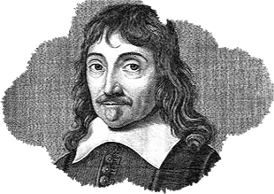
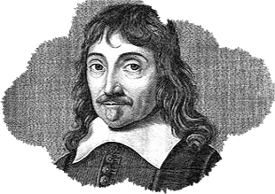

Je pense
donc je suis
 

Méditations métaphysiques
Méditation seconde
Descartes
Amusez-vous ensuite à tester vos connaissances sur Descartes en répondant à notre quiz !
Il est considéré comme l’un des fondateurs de la philosophie moderne. Il reste célèbre pour avoir exprimé dans son Discours de la méthode le cogiton - « Je pense, donc je suis » - fondant ainsi le système des sciences sur le sujet connaissant face au monde qu’il se représente. En physique, il a apporté une contribution à l’optique et est considéré comme l’un des fondateurs du mécanisme. En mathématiques, il est à l’origine de la géométrie analytique. Certaines de ses théories ont par la suite été contestées (théorie de l’animal-machine) ou abandonnées (théorie des tourbillons ou des esprits animaux). Sa pensée a pu être rapprochée de la peinture de Nicolas Poussin pour son caractère clair et ordonné. Le cogito marque la naissance de la subjectivité moderne.
Sa méthode scientifique, exposée à partir de 1628 dans les Règles pour la direction de l’esprit, puis dans le Discours de la méthode en 1637, affirme constamment une rupture par rapport à la scolastique enseignée dans l’Université. Le Discours de la méthode s’ouvre sur une remarque proverbiale « Le bon sens est la chose du monde la mieux partagée » pour insister davantage sur l’importance d’en bien user au moyen d’une méthode qui nous préserve, autant que faire se peut, de l’erreur. Elle se caractérise par sa simplicité et prétend rompre avec les interminables raisonnements scolastiques. Elle s’inspire de la méthode mathématique, cherchant à remplacer la syllogistique aristotélicienne utilisée au Moyen Âge depuis le xiiie siècle.
Comme Galilée, il se rallie au système cosmologique copernicien ; mais, par prudence envers la censure, il « avance masqué », en dissimulant partiellement ses idées nouvelles sur l’homme et le monde dans ses pensées métaphysiques, idées qui révolutionneront à leur tour la philosophie et la théologie. L’influence de René Descartes sera déterminante sur tout son siècle : les grands philosophes qui lui succèderont développeront leur propre philosophie par rapport à la sienne, soit en la développant (Arnauld, Malebranche), soit en s’y opposant (Locke, Hobbes, Pascal, Spinoza, Leibniz).
Il affirme un dualisme substantiel entre l’âme et le corps, en rupture avec la tradition aristotélicienne. Il radicalise sa position en refusant d’accorder la pensée à l’animal, le concevant comme une « machine », c’est-à-dire un corps entièrement dépourvu d’âme. Cette théorie sera critiquée dès son apparition mais plus encore à l’époque des Lumières, par exemple par Voltaire, Diderot ou encore Rousseau.